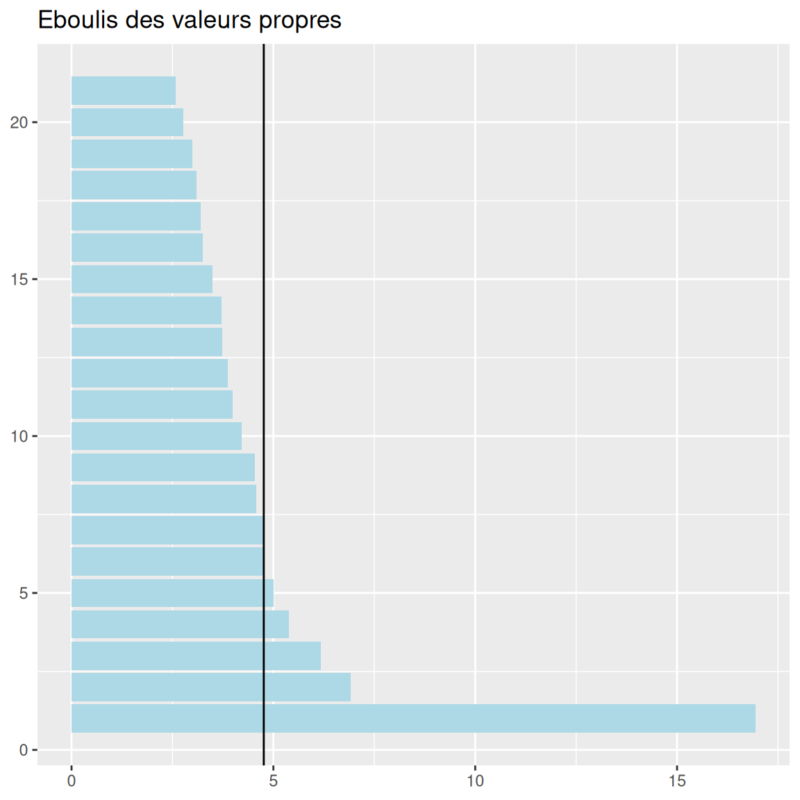
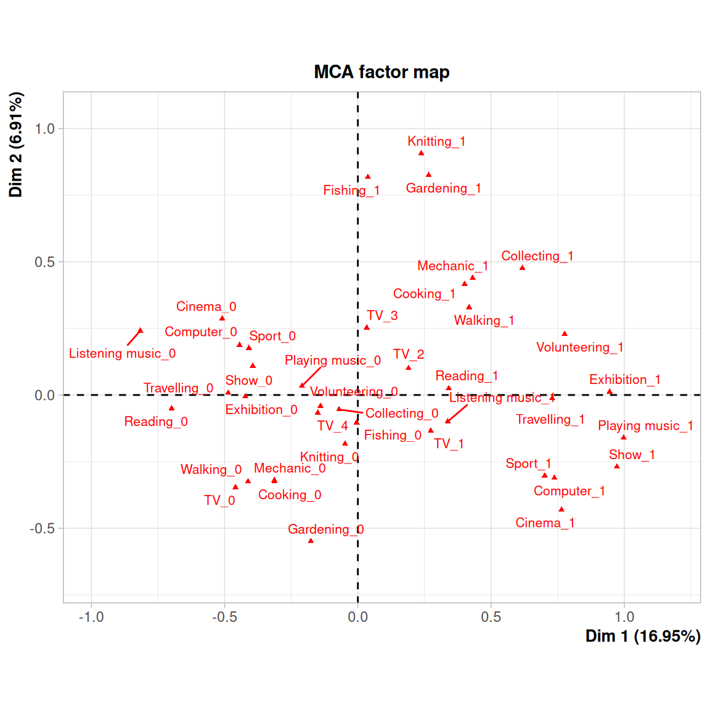
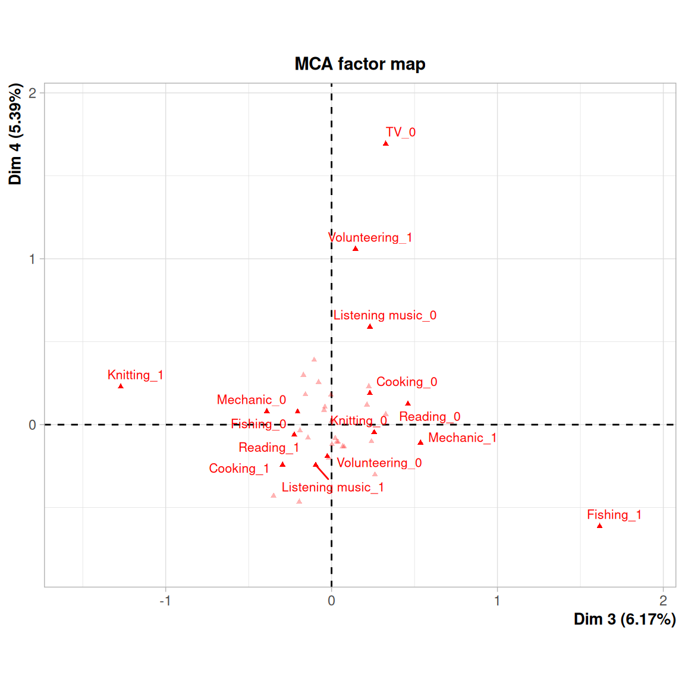
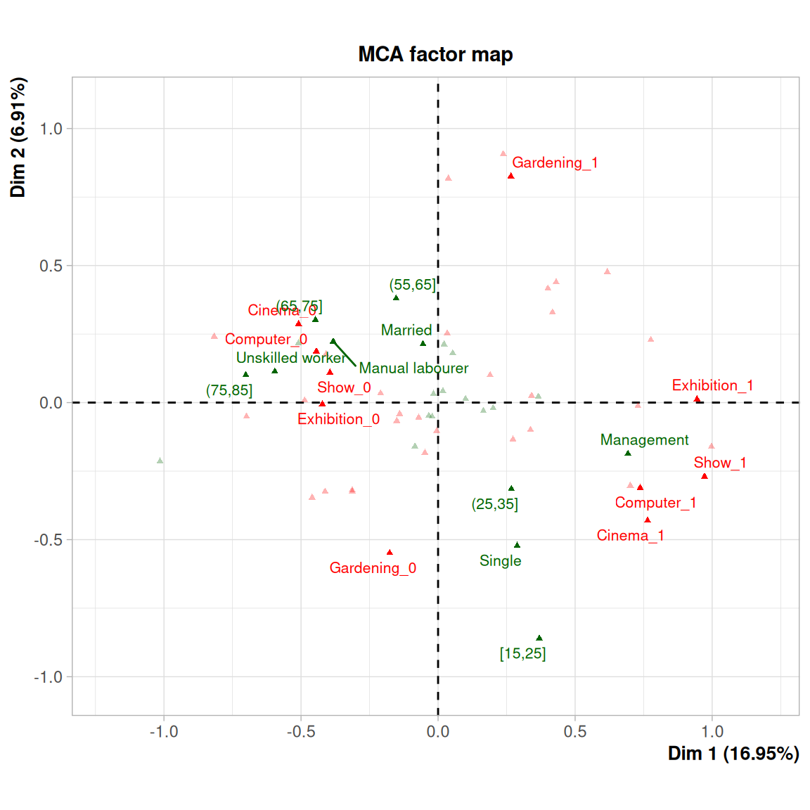
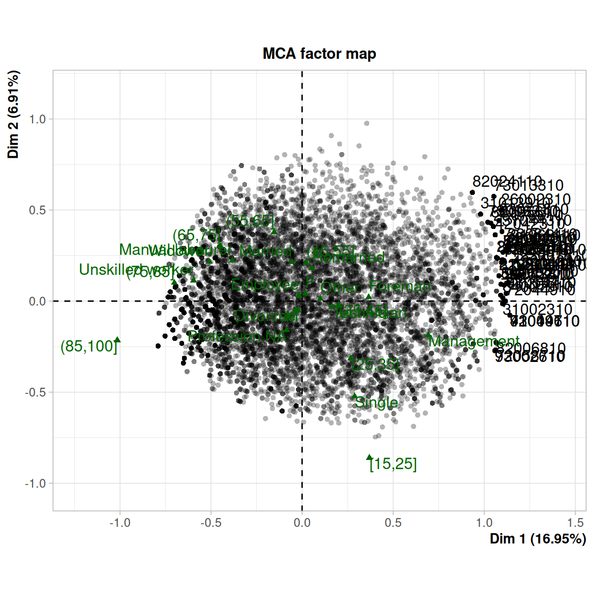
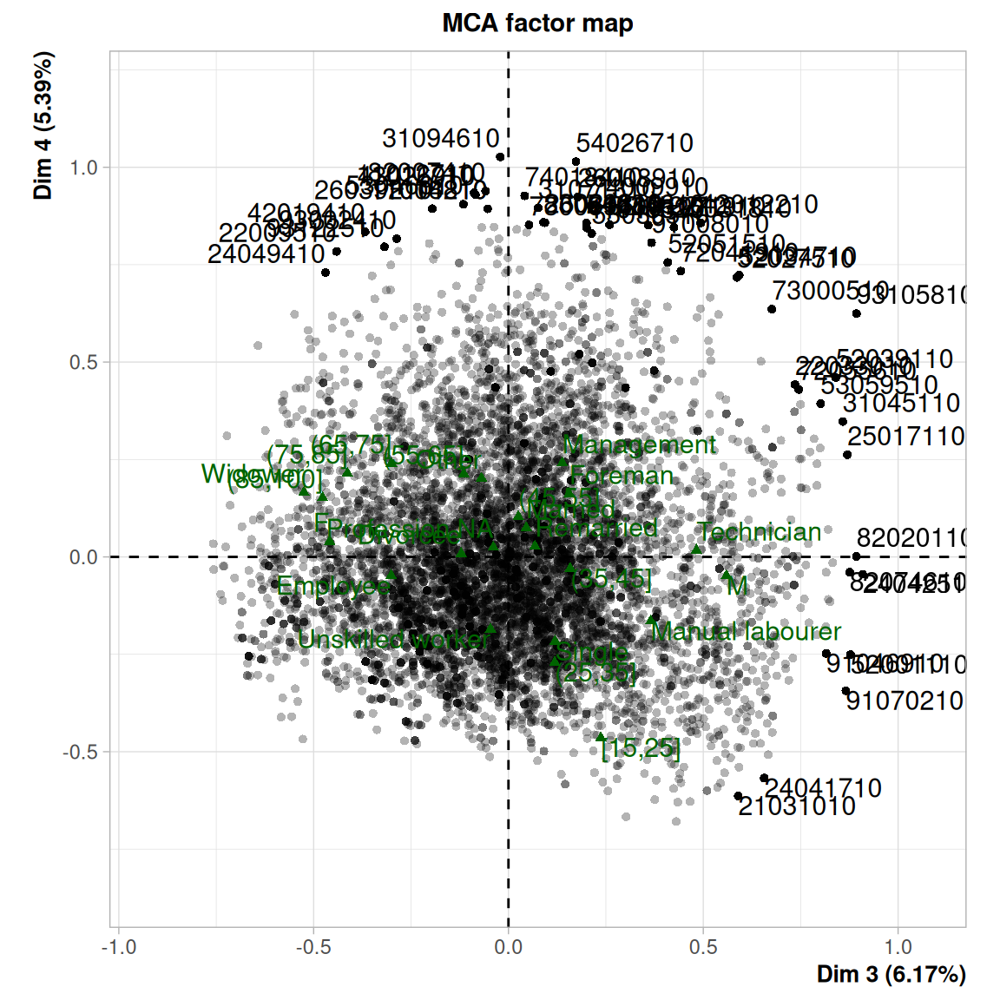
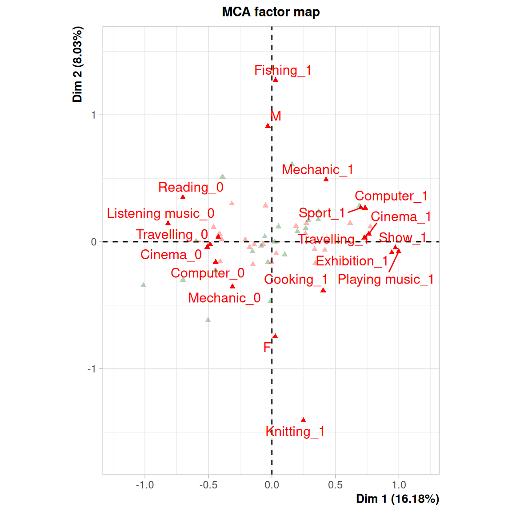

Chapitre 6 L’ACM
6.1 Principe de l’ACM
L’ACM permet d’analyser les liens entre \(p\) variables qualitatives. C’est une généralisation de l’AFC pour \(p > 2\) variables qualitatives.
On peut y mettre des variable quantitatives, à condition de les discrétiser (donc de les transformer en variables qualitatives).
L’ACM est une AFC faite sur le tableau disjonctif complet (ou le tableau de Burt, non traité ici). Le poids de chacune des variables est donc le nombre de ses modalités moins 1. Cela signifie qu’une variable avec un grand nombre de modalités pèsera plus dans la constitution des axes qu’une autre avec peu de modalités. À l’inverse, le poids des individus (lignes) peut être spécifié dans FactoMiner (argument row.w de la fonction MCA).
Le résultat d’une ACM, comme pour les autres analyses factorielles, est consitué des coordonnées des individus et des variables dans le nouvel espace construit. On peut donc utiliser cette technique pour transformer des variables qualitatives en variables continues.
6.1.1 Le tableau disjonctif complet
On (enfin, R le fait tout seul) transforme les modalités des variables qualitatives en autant de variables binaires.
Table ordonnée
Tableau disjonctif complet
La “dernière” des colonnes correspondant à une variable peut être déduite des valeurs observées dans les autres. Par exemple si Sexe_H=1, alors Sexe_F=0 et vice versa.
6.2 Ressources
Un cours assez détaillé sur l’ACM sur ce fichier pdf, et sur l’ACM avec Factominer sur cette page.
6.3 L’ACM avec FactoMiner
6.3.1 Exemple
6.3.1.1 Données utilisées
Le jeu de donnée est pris directement dans le package FactoMineR : il s’agit d’un dataframe rassemblant des données concernant les hobbies des personnes interrogées. Pour l’analyse, on ne retient que les variables concernant ces pratiques, en mettant de côté les variables décrivant les individus eux-mêmes, soit les variables 19 à 23 du dataframe.
Chargement des données :
Examen rapide :
6.3.2 Réalisation de l’ACM
Analyse et création de l’objet :
## [1] "eig" "call" "ind" "var" "svd"Si l’on veut en savoir plus :
6.3.2.1 Nombre d’axes retenus
On reprend les méthodes vues pour l’ACP et l’AFC.
## eigenvalue percentage of variance cumulative percentage of variance
## dim 1 0.19771155 16.946704 16.94670
## dim 2 0.08064911 6.912781 23.85948
## dim 3 0.07202181 6.173298 30.03278
## dim 4 0.06287244 5.389066 35.42185
## dim 5 0.05846003 5.010860 40.43271
## dim 6 0.05581245 4.783924 45.21663La première dimension est au-dessus des autres.
## [1] 4.761905Ici, le critère de l’inertie moyenne conduirait à retenir 5 voire 6 axes factoriels qui portent 40 à 45% de l’hétérogénéité.
## dim 3 dim 4 dim 5 dim 6 dim 7
## 0.1084351542 -0.0005220826 0.0047369634 0.0017648268 0.0023585191
## dim 8 dim 9 dim 10 dim 11 dim 12
## -0.0019260770 0.0019513049 -0.0036504504 0.0012774599 0.0012178535
## dim 13 dim 14 dim 15 dim 16 dim 17
## -0.0001422951 0.0014088702 -0.0024082694 -0.0002577355 0.0021717212
## dim 18 dim 19 dim 20 dim 21
## -0.0004689857 -0.0001353936 -0.0013750132 0.0003297842Le critère du coude est lui nettement plus parcimonieux et conduit à retenir 3 axes : la dérivée seconde change de signe entre les axes 3 et 4. Mais dans ce cas, seule 30% de l’inertie est conservée.
mm <- mean (eig$`percentage of variance`)
ggplot (eig, aes(x = 1:nrow(eig), weight = `percentage of variance`)) +
geom_bar (fill = "lightblue") +
coord_flip() + ggtitle ("Eboulis des valeurs propres") +
theme (axis.title = element_blank()) +
geom_hline (yintercept = mm)
Dans une ACM, on n’a pas forcément de “décrochage” évident dans l’éboulis des valeurs propres : il est plus difficile de concentrer l’inertie de variables qualitatives que quantitatives. On doit donc généralement retenir plus d’axes ou renoncer à une part significative de l’inertie.
En raison de cette dilution de l’information dans l’ACM, quand on dispose de variables qualitatives et quantitatives, il est souvent préférable de faire une ACP en introduisant les variable qualitatives en variables illustratives (si elles ne sont pas cruciales, évidemment).
On peut aussi retenir un nombre d’axes assez élevé, puis dans un second temps ne conserver que ceux qui sont bien interprétables.
6.3.2.2 Interprétation des axes
##
## Call:
## MCA(X = ., graph = F)
##
##
## Eigenvalues
## Dim.1 Dim.2 Dim.3 Dim.4 Dim.5 Dim.6 Dim.7
## Variance 0.198 0.081 0.072 0.063 0.058 0.056 0.056
## % of var. 16.947 6.913 6.173 5.389 5.011 4.784 4.759
## Cumulative % of var. 16.947 23.859 30.033 35.422 40.433 45.217 49.976
## Dim.8 Dim.9 Dim.10 Dim.11 Dim.12 Dim.13 Dim.14
## Variance 0.053 0.053 0.049 0.046 0.045 0.044 0.043
## % of var. 4.569 4.547 4.211 3.985 3.864 3.730 3.717
## Cumulative % of var. 54.545 59.092 63.303 67.288 71.152 74.881 78.598
## Dim.15 Dim.16 Dim.17 Dim.18 Dim.19 Dim.20 Dim.21
## Variance 0.041 0.038 0.037 0.036 0.035 0.032 0.030
## % of var. 3.497 3.256 3.200 3.105 2.997 2.772 2.575
## Cumulative % of var. 82.095 85.351 88.551 91.655 94.652 97.425 100.000
##
## Individuals (the 10 first)
## Dim.1 ctr cos2 Dim.2 ctr cos2 Dim.3 ctr
## 11000210 | 0.667 0.027 0.336 | -0.191 0.005 0.027 | 0.147 0.004
## 11000410 | 0.140 0.001 0.011 | 0.434 0.028 0.108 | 0.163 0.004
## 11000610 | -0.155 0.001 0.032 | -0.244 0.009 0.079 | -0.293 0.014
## 11000710 | -0.108 0.001 0.011 | -0.285 0.012 0.073 | 0.000 0.000
## 11000810 | -0.022 0.000 0.001 | -0.268 0.011 0.087 | -0.225 0.008
## 11000910 | -0.636 0.024 0.449 | 0.019 0.000 0.000 | 0.192 0.006
## 11001010 | -0.206 0.003 0.046 | -0.239 0.008 0.063 | 0.319 0.017
## 11001110 | 0.284 0.005 0.065 | -0.611 0.055 0.304 | -0.066 0.001
## 11001210 | 0.598 0.021 0.261 | -0.577 0.049 0.243 | 0.028 0.000
## 11001310 | 0.204 0.003 0.033 | -0.015 0.000 0.000 | 0.089 0.001
## cos2
## 11000210 0.016 |
## 11000410 0.015 |
## 11000610 0.113 |
## 11000710 0.000 |
## 11000810 0.061 |
## 11000910 0.041 |
## 11001010 0.111 |
## 11001110 0.004 |
## 11001210 0.001 |
## 11001310 0.006 |
##
## Categories (the 10 first)
## Dim.1 ctr cos2 v.test Dim.2 ctr cos2
## Reading_0 | -0.699 4.503 0.239 -44.766 | -0.051 0.058 0.001
## Reading_1 | 0.341 2.199 0.239 44.766 | 0.025 0.028 0.001
## Listening music_0 | -0.817 5.478 0.275 -48.111 | 0.241 1.170 0.024
## Listening music_1 | 0.337 2.262 0.275 48.111 | -0.100 0.483 0.024
## Cinema_0 | -0.509 4.369 0.389 -57.170 | 0.287 3.398 0.123
## Cinema_1 | 0.764 6.561 0.389 57.170 | -0.430 5.103 0.123
## Show_0 | -0.394 3.109 0.383 -56.753 | 0.109 0.586 0.029
## Show_1 | 0.972 7.663 0.383 56.753 | -0.270 1.444 0.029
## Exhibition_0 | -0.422 3.461 0.399 -57.885 | -0.005 0.001 0.000
## Exhibition_1 | 0.945 7.745 0.399 57.885 | 0.012 0.003 0.000
## v.test Dim.3 ctr cos2 v.test
## Reading_0 -3.255 | 0.460 5.367 0.104 29.496 |
## Reading_1 3.255 | -0.225 2.621 0.104 -29.496 |
## Listening music_0 14.202 | 0.231 1.207 0.022 13.630 |
## Listening music_1 -14.202 | -0.096 0.498 0.022 -13.630 |
## Cinema_0 32.200 | -0.045 0.093 0.003 -5.030 |
## Cinema_1 -32.200 | 0.067 0.139 0.003 5.030 |
## Show_0 15.735 | 0.032 0.056 0.002 4.582 |
## Show_1 -15.735 | -0.078 0.137 0.002 -4.582 |
## Exhibition_0 -0.748 | 0.076 0.306 0.013 10.384 |
## Exhibition_1 0.748 | -0.169 0.684 0.013 -10.384 |
##
## Categorical variables (eta2)
## Dim.1 Dim.2 Dim.3
## Reading | 0.239 0.001 0.104 |
## Listening music | 0.275 0.024 0.022 |
## Cinema | 0.389 0.123 0.003 |
## Show | 0.383 0.029 0.002 |
## Exhibition | 0.399 0.000 0.013 |
## Computer | 0.327 0.058 0.041 |
## Sport | 0.287 0.053 0.062 |
## Walking | 0.172 0.107 0.002 |
## Travelling | 0.355 0.000 0.000 |
## Playing music | 0.209 0.005 0.002 |

Les résultats sur le premier plan factoriel sont assez parlants : le premier axe sépare les modalités “pratique” versus “non pratique” de l’acitivité. Le second axe semble opposer les activités manuelles ou physiques (coordonnées positives sur l’axe 2) aux activités plus culturelles (cinéma, musique…).
Sur le deuxième plan factoriel, l’axe 3 permet de distinguer les individus qui pêchent et écoutent de la musique des individus qui font de la couture et de la cuisine. Le 4^ème axe factoriel met en évidence les individus qui ne regardent pas la télévision et qui s’impliquent dans le volontariat.
6.3.3 Variables supplémentaires
Dans cet exemple, il est particulièrement judicieux d’utiliser les variables concernant les individus comme variables supplémentaires pour voir quel type de personne a quel type de hooby. On voit notamment que ce sont les moins qualifiés et les plus âgés qui ont moins de hobby, alors que les managers sont plutôt dans le cadrant des loisirs “culturels”.
acm <- MCA(hobbies,quali.sup = 19:22,quanti.sup = 23,ncp=4,graph = F)
plot.MCA(acm,axes=1:2,cex=.7,selectMod = "cos2 10",select = "contrib 10", invisible = "ind")
Les sorties de la fonction summary donnent en outre les coordonnées sur les axes factoriels des modalités des variables ainsi que sa qualité, sa contribution et le test de significativité associé (est-elle non nulle ?)
Elle donne également le rapport de corrélation (eta2, voir module 3 pour un rappel de ce qu’il signifie) entre le facteur et chacune de ces variables, ce qui permet d’apprécier l’intensité du lien entre la variable, toutes modalités confondues, et chaque facteur.
6.4 Exercice
A partir de ce qui vient d’être vu, complétez l’interprétation des résultats :
- Quelles sont les variables les plus contributrices aux 3 premiers axes ?
- Quel est le hobby le plus courant ? Le plus discriminant ?
- Affichez les individus dans les 2 premiers plans factoriels, en sélectionnant les 50 plus forts contributeurs à l’inertie.
- Y a-t-il un lien entre hobbies et genre ?
- Refaites l’ACM en ajoutant la variable sexe en variable active. Que constatez-vous ?


acm2 <- MCA (hobbies, quali.sup = 20:22, quanti.sup = 23, graph = F)
plot.MCA (acm2, invisible = "ind", selectMod = "contrib 20")
Elément de réponse à la dernière question : rajouter la variable change complètement l’analyse et l’opposition H/F emporte une bonne partie de l’inertie \(\Rightarrow\) il faut bien réfléchir à ce qu’on introduit comme variable dans l’analyse et la problématique à laquelle on veut répondre. Ici, on centre l’analyse sur les pratiques en termes de loisirs, donc introduire des variables sur les individus n’est pas pertinent.